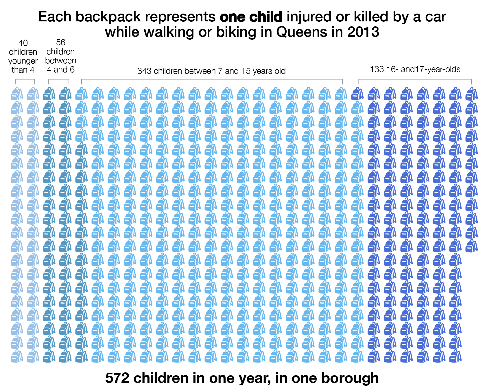

<html lang="en" xmlns="http://www.w3.org/1999/xhtml">
<head>
  <meta name="generator" content=
  "HTML Tidy for Linux/x86 (vers 25 March 2009), see www.w3.org" />
  <meta charset="utf-8" />
  <meta http-equiv="X-UA-Compatible" content="IE=edge" />
  <meta name="viewport" content="width=device-width, initial-scale=1" />

  <title>Vision Zero for Queens Schoolkids</title><!-- Bootstrap -->
  <!-- Latest compiled and minified CSS -->
  <link rel="stylesheet" href=
  "http://netdna.bootstrapcdn.com/bootstrap/3.1.1/css/bootstrap.min.css" type=
  "text/css" /><!-- Optional theme -->
  <link rel="stylesheet" href=
  "http://netdna.bootstrapcdn.com/bootstrap/3.1.1/css/bootstrap-theme.min.css" type=
  "text/css" />
  <!-- HTML5 Shim and Respond.js IE8 support of HTML5 elements and media queries -->
  <!-- WARNING: Respond.js doesn't work if you view the page via file:// -->
  <!--[if lt IE 9]>
      <script src="https://oss.maxcdn.com/libs/html5shiv/3.7.0/html5shiv.js"></script>
      <script src="https://oss.maxcdn.com/libs/respond.js/1.4.2/respond.min.js"></script>
    <![endif]-->
</head>

<body>
  <div class="container">
    <div class="jumbotron">
      <h2>Vision Zero for Queens Schoolkids</h2>

      <p class="lead">Parents, politicians and community members are taking actions to
      make streets safer for kids going to and from school in the borough known for its
      "Boulevard of Death."</p>
    </div><!-- /jumbotron -->

    <p class="text-muted byline">By <a href=
    "http://twitter.com/CristinaFurlong">Cristina Furlong</a> and <a href=
    "http://twitter.com/JuliaJRH">Julia Haslanger</a> | May 2015</p>

    <p>Nearly 350,000 kids travel to and from school in Queens each day. The <a href=
    "http://www.nyc.gov/html/doh/downloads/pdf/ip/ip-nyc-inj-child-fatality-report13.pdf">
    Department of Health found</a> that a car accidents are leading cause of death for
    elementary and middle school-age children across the city. And more often than not,
    the child killed is a pedestrian.</p>

    <div class="row">
      <div class="col-md-2"></div>

      <div class="col-md-4">    </div>

      <div class="col-md-4">
        <h4 style="color:#0b6fd4; margin-bottom:0px" class="pull-left">4 out of 5</h4>

        <h6 class="pull-left" style="margin-top:0px">4 out of 5 NYC kids ages 5 to 9 who
        were killed in a motor vehicle incident were pedestrians (2002-2011, DOH).</h6>
      </div>

      <div class="col-md-2"></div>
    </div>

    <p>The city's second-largest borough is packed with activists trying to make the
    streets safer for kids on foot and bike, and city agencies have joined in the effort.
    So what are advocates and bureaucrats are trying to make Queens streets safer?</p>

    <h3>Let's start by looking at the problem.</h3>
    

    <h3>Queens has a reputation for being a deadly place for pedestrians.</h3>

    <p>Queens Boulevard has been known as the Boulevard of Death <a href=
    "http://en.wikipedia.org/wiki/Queens_Boulevard">for at least 20 years</a>. In 1993,
    17 deaths were reported for that roadway alone.</p>

    <p>December 2012 marked the beginning of a deadly time for children in particular in
    northern Queens, as the borough was rocked by the deaths of <a href=
    "http://www.dnainfo.com/new-york/20121230/jackson-heights/family-seeks-justice-for-11-year-old-killed-by-dump-truck-hit-and-run">
    Miguel Torres</a>, <a href=
    "http://www.nydailynews.com/new-york/queens/queens-driver-killed-boy-3-charged-dwi-article-1.1483728">
    Jahair Figueroa</a>, <a href=
    "http://gothamist.com/2013/03/12/van_driver_who_killed_teen_on_queen.php">Drudak
    Tenzin</a>, <a href=
    "http://www.streetsblog.org/2014/11/07/new-york-state-dmv-dismisses-tickets-to-driver-who-killed-toddler-allie-liao/">
    Allison Liao</a>, and <a href=
    "http://www.nytimes.com/2013/12/21/nyregion/boy-8-fatally-struck-by-tractor-trailer-in-queens.html?_r=0">
    Noshat Nahian</a> among others through the end of 2013.</p>

    <p>There was also an incident in September 2013 that <a href=
    "http://theforumnewsgroup.com/2013/09/19/after-tragic-accident-calls-for-change-in-maspeth/">
    left five kids seriously injured</a> after a driver went up onto the sidewalk as the
    students were walking to school. That crash happened in Maspeth, where an estimated
    4,000 students go to and from just three schools (IS 73, PS 58 and Maspeth High
    School).</p>

    <p>CityLab <a href=
    "http://www.citylab.com/commute/2013/12/growing-plea-new-york-pedestrian-deaths-cannot-be-tolerated/7954/">
    declared in late 2013</a> that Northern Boulevard, which intersects with Queens
    Boulevard, "is like the uncontrolled id of the city&#8217;s driving culture."</p>

    <div class="row">
      <div class="col-md-12">
      <p>The danger on the streets (and sidewalks) for kids is real &#8212; hundreds of
      kids who are biking or walking are injured each year in Queens.</p>
      <cite><em>Source: Queens County Traffic Safety Data report, prepared by the Institute for Traffic Safety Management and Research, released February 2015. Graphic by Julia Haslanger. Backpack icon by Michael Stüker via The Noun Project.</em></cite>
      </br>
      </div>


    <p>Progress has been slow and focused on street redesigns, which require lengthy
    studies and funding to complete. It may take up to seven years from a street redesign
    to become applied, and in the meantime, there are still injuries and fatalities. It
    wasn't until Vision Zero, the mayor&#8217;s plan to reduce traffic fatalities was
    announced in 2014 that a combined effort with city agencies was finally put in
    place.</p>
        </div>
<h3>A birds-eye view of crashes</h3>
    <div class="row">
      
      <div class="col-md-2">
        <p>More than 400 pedestrians and bikers were killed in New York City by motor
        vehicles since 2012. And, 20% of those injuries and fatalities were children. Is
        your neighborhood a hotspot for pedestrian or bike deaths in car accidents? (Can
        you spot the "Boulevard of Death" (Queens Boulevard)?)</p>

        <p>Vision Zero also maintains <a href="http://www.nycvzv.info">a map</a> where
        you can view how many injuries and deaths have happened in your community
        district.</p>
      </div>

      <div class="col-md-10">
        <h5>Hundreds of bikers and pedestrians killed across New York City since
        2012</h5><iframe width='100%' height='520' frameborder='0' src=
        'https://juliajrh.cartodb.com/viz/6d66b224-b8b6-11e4-bdb2-0e0c41326911/embed_map'
        allowfullscreen="" webkitallowfullscreen="" mozallowfullscreen=""
        oallowfullscreen="" msallowfullscreen=""></iframe> <cite><em><a href=
        "http://www.nyc.gov/html/dot/html/about/vz_datafeeds.shtml">Vision
        Zero</a></em></cite>
      </div>
    </div>

    <h3>City agencies are ramping up efforts to reduce traffic deaths</h3>

    <p>Vision Zero is a coordinated effort of the NYPD, Department of Transportation,
    Department of Health and the Taxi and Limousine Commission to work towards the goal
    of zero traffic fatalities in the city. The effort started in January 2014 under
    Mayor Bill DiBlasio's direction. DiBlasio announced the Vision Zero plan from an
    elementary school in Queens where an 8-year-old was killed crossing Northern Blvd on
    his way to school.</p>

    <h4>Department of Transportation</h4>

    <p>The Department of Transportation has the brunt of the responsibility for
    establishing Vision Zero in the city. Their efforts on school safety go beyond the
    street redesign and detailed traffic studies. They also make <a href=
    "http://a841-dotweb01.nyc.gov/SSML/">specific maps</a> and plans for many of the
    schools in New York City (including Queens), and hold safety education trainings.</p>

    <div class="row">
      
      <div class="col-md-4">
        <p><b>Priority Schools</b></p>
        <p>One effort by the Department of Transportation has been to identify <a href=
        "http://www.nyc.gov/html/dot/html/pedestrians/saferoutes.shtml">"priority"
        schools</a> to focus efforts on. Each priority school "receives an individualized
        planning study which determines both short-term and long-term measures to improve
        safety," according to DOT. The schools are a mix of public and private, and each
        school receives a personalized study and plan for improving child safety. DOT is
        on its second round of priority schools. Learn more about the 33 Queens schools
        selected for the second round using the map to the right.</p>
      </div>

      <div class="col-md-8">
        <h4>33 Queens public and private schools are designated as "priority
        schools"</h4><iframe width="100%" height="500" src=
        "http://juliajrh.cartodb.com/viz/be1d343e-d104-11e4-ab53-0e0c41326911/embed_map"
        style="border:none"></iframe> <cite><em>Source: <a href=
        "https://data.cityofnewyork.us/Transportation/Safe-Route-to-Schools-Priority-Schools/pc34-d3sx">
        Department of Transportation</a>, <a href=
        "http://www.nyc.gov/html/dot/html/pedestrians/saferoutes.shtml">Safe Routes to
        Schools</a></em></cite>
      </div>
    </div>

    <div class="row">
      <div class="col-md-12">
      <h2>What Queens schools get safety education traning from the DOT?</h2>

      <p>The Department of Transportation did outreach at 700 schools, but that leaves
      more than 1,000 schools unvisited. See the schools where outreached
      happened:</p>
      <iframe width='100%' height='520' frameborder='0' src=
      'https://cristina-furlong.cartodb.com/viz/2aeb00b6-b916-11e4-8364-0e9d821ea90d/embed_map'
      allowfullscreen="" webkitallowfullscreen="" mozallowfullscreen="" oallowfullscreen=
      "" msallowfullscreen=""></iframe> 
      <cite><em>Source: NYC Department of
      Transportation.</em></cite>

      <p>Another aspect of DOT safety education is <a href=
      "http://www.nyc.gov/html/dot/html/about/safety-city.shtml">Safety City</a>. It is
      an off-site field trip program for 3rd graders the involves a full day of safety
      training. Unfortunately, the program has lost its location in Queens, thus reducing
      the number of children who are able to take the class trip to the two remaining
      locations: Harlem and Staten Island.</p>
      </div>
    </div>
<!--
    <div class="row">
      
        <h4>NYPD</h4>
                <div class="col-md-4">

        <p>The Vision Zero plan for New York City utilizes NYPD data to target enforcement areas for critical safety improvements based on collisions and poor street design. The addition of <a href="http://www.nyc.gov/html/dot/downloads/pdf/2014-10-speed-camera-faq.pdf">140 speed cameras</a>, which operate in schools zones have been effective in reducing speeds as well as injury around schools.</p>
<p><b>Crossing guards</b></p>
        <p>However, NYPD has been slow to improve the working conditions and overall number of school crossing guards on the streets dedicated to providing safe crossing for our children. Currently, there are no plans to increase the number of crossing guards, despite an aggressive push for new school construction, including <a href="http://schools.nyc.gov/ChoicesEnrollment/Elementary/newschools">three new elementary schools in Queens</a> by this fall.</p>
        
        
</div>
<div class="row">
<h4>Department of Education</h4>
<div class="col-md-4">

<p>Serving over 350,000 school kids in Queens, in seven distinct school districts, the Department of Education could take on a priority role in keeping kids safe, yet it isn't a major participant in Vision Zero plans. Each school is required to have a school safety plan and a safety committee, which meets monthly, but the safety plans don't mention guidelines for pedestrian safety issues the children face. Individual school safety plans could (but don't) include specific actions related to school pick-up and drop off of students. As it stands, cars, city and school buses and parents themselves are putting kids at risk with erratic, impatient driving, parking in crosswalks, or double parking in a manner that has school busses dropping off children in the street. It's up to schools Chancellor Carmen Farina to provide a mandate to make such a safety plan include street safety plans. 
</p>
</div>
</div>
</div>
<h4>Department of Health</h4>
<p>The DOE could find direction by looking at materials created by the Department of Health, whose district public health offices in Harlem, Brooklyn and the Bronx created the <a href="http://www.nyc.gov/html/doh/downloads/pdf/dpho/getting-to-scool.pdf">Getting to School Neighborhood Report</a> which researched and reported on methods to improve the commute to school for city kids. Citing that over 60 percent of kids in the research area walked to school, it encourages safe, active transportation methods. The study did not include neighborhoods in Queens, however. The borough would benefit from this report being given funding to be recreated for all school districts, and fully implemented by school through health and wellness programs.</p>
-->

      <h3>Kids aren't just waiting for the grown-ups to get it together.</h3>

      <div class="row">
        <div class="col-md-9">
          <p><a href="https://www.facebook.com/VisionZeroYouthCouncil">Vision Zero Youth
          Council</a> formed after three children, alumni and current students of M.S. 51
          in Brooklyn were killed in traffic violence. The youth council works to honor
          their memories with lobbying and advocacy, and is open to students from 4th to
          12th grade.</p>

          <p><a href="http://makequeenssafer.org/home/kid-engineers-traffic-study/">Kids
          Engineering Traffic Study</a> brought students from a handful of schools
          together to document traffic conditions, including speed (using radar guns) and
          behavior of drivers, cyclists and pedestrians (using observation techniques).
          It was part of the Safer Greener Street Fair sponsored by Make Queens Safer in
          Jackson Heights.</p>
        </div>

        <div class="col-md-3">
          

          <cite><em>Preston Liao lost his best buddy, sister Allison when she was only three
          years old.</em></cite>
        </div>
      </div>
      <div class="row">
       <p><b> If you have had a dangerous experience taking your child to school, please consider taking our survey that could jumpstart local conversations and give important data to the relevant agencies.</b></p>
        <iframe src="https://docs.google.com/forms/d/1aSL5fG5Ywo4fKcEIzVME4xjstXa9D8kT4AEXVROozYM/viewform?embedded=true" width="600" height="400" frameborder="0" marginheight="0" marginwidth="0">Loading...</iframe>
</div>
<div>
  
  
<!DOCTYPE HTML PUBLIC "-//W3C//DTD HTML 4.01//EN" "http://www.w3.org/TR/html4/strict.dtd"><html><head><link rel="shortcut icon" href="https://ssl.gstatic.com/docs/spreadsheets/forms/favicon_jfk2.png" type="image/x-icon">
<meta http-equiv="Content-type" content="text/html; charset=utf-8">
<meta http-equiv="X-UA-Compatible" content="IE=10; chrome=1;">
<meta name="fragment" content="!">
<meta name="viewport" content="width=device-width">
<base target="_blank">
<link rel="stylesheet" type="text/css" href="//fonts.googleapis.com/css?family=Roboto:400,700">

<link href='/static/forms/client/css/2098930542-formview_embedded_st_ltr.css' type='text/css' rel='stylesheet'>
<style type="text/css">
body {

  background-position: left top;
}

.ss-form-container, .ss-resp-card {
  background-color: rgb(255,255,255);
}

.ss-footer, .ss-response-footer {
  background-color: rgb(255,255,255);
}

.ss-grid-row-odd {
  background-color: rgb(242,242,242);
}

.ss-form-container, .ss-resp-card {
  border-color: rgb(212,212,212);
}

.ss-form-title {
  text-align: left;
}

.ss-form-title[dir="rtl"] {
  text-align: right;
}

.ss-form-desc {
  text-align: left;
}

.ss-form-desc[dir="rtl"] {
  text-align: right;
}

.ss-header-image-container {
  height: 0;
}


.ss-record-username-message {
  font-family: "Roboto";
  color: rgb(119,119,119);
  font-weight: 400;
  font-style: normal;
}

.ss-form-title {
  font-family: "Roboto";
  color: rgb(80,80,80);
  font-weight: 400;
  font-style: normal;
}

.ss-confirmation {
  font-family: "Roboto";
  color: rgb(80,80,80);
  font-weight: 400;
  font-style: normal;
}

.ss-page-title, .ss-section-title {
  font-family: "Roboto";
  color: rgb(80,80,80);
  font-weight: 400;
  font-style: normal;
}

.ss-form-desc, .ss-page-description, .ss-section-description {
  font-family: "Roboto";
  color: rgb(140,140,140);
  font-weight: 400;
  font-style: normal;
}

.ss-resp-content {
  font-family: "Roboto";
  color: rgb(119,119,119);
  font-weight: 400;
  font-style: normal;
}

.ss-q-title {
  font-family: "Roboto";
  color: rgb(80,80,80);
  font-weight: 700;
  font-style: normal;
}

.ss-embeddable-object-container .ss-q-title {
  font-family: "Roboto";
  color: rgb(80,80,80);
  font-weight: 700;
  font-style: normal;
}

.ss-q-help, .ss-q-time-hint {
  font-family: "Roboto";
  color: rgb(140,140,140);
  font-weight: 400;
  font-style: normal;
}

.ss-choice-label, .video-secondary-text, .ss-gridrow-leftlabel, .ss-gridnumber, .ss-scalenumber, .ss-leftlabel, .ss-rightlabel {
  font-family: "Roboto";
  color: rgb(80,80,80);
  font-weight: 400;
  font-style: normal;
}

.error-message, .required-message, .ss-required-asterisk {
  font-family: "Roboto";
  color: rgb(196,59,29);
  font-weight: 400;
  font-style: normal;
}

.ss-send-email-receipt {
  font-family: "Roboto";
  color: rgb(80,80,80);
  font-weight: 400;
  font-style: normal;
}

.ss-password-warning {
  font-family: "Arial";
  color: rgb(119,119,119);
  font-weight: 400;
  font-style: italic;
}

.disclaimer {
  font-family: "Arial";
  color: rgb(119,119,119);
  font-weight: 400;
  font-style: normal;
}

.ss-footer-content {
  font-family: "Arial";
  color: rgb(80,80,80);
  font-weight: 400;
  font-style: normal;
}

.progress-label {
  font-family: "Roboto";
  color: rgb(140,140,140);
  font-weight: 400;
  font-style: normal;
}


input[type='text'], input:not([type]), textarea {
}

.error, .required, .errorbox-bad {
  border-color: rgb(196,59,29);
}

.jfk-progressBar-nonBlocking .progress-bar-thumb {
  background-color: rgb(140,140,140);
}

.ss-logo-image {
  background-image: url('//ssl.gstatic.com/docs/forms/forms_logo_small_dark.png');
  background-size: 108px 21px;
  width: 108px;
  height: 21px;
}

@media screen and (-webkit-device-pixel-ratio: 2) {
.ss-logo-image {
  background-image: url('//ssl.gstatic.com/docs/forms/forms_logo_small_dark_2x.png');
}
}

</style>


<style type="text/css">
      
    </style>
<script type="text/javascript">
      /**
 * @license
 *
 * H5F 1.1.1
 * See https://github.com/ryanseddon/H5F/ for details.
 *
 * Copyright (c) 2013 Ryan Seddon
 *
 * Permission is hereby granted, free of charge, to any person
 * obtaining a copy of this software and associated documentation
 * files (the "Software"), to deal in the Software without
 * restriction, including without limitation the rights to use,
 * copy, modify, merge, publish, distribute, sublicense, and/or sell
 * copies of the Software, and to permit persons to whom the
 * Software is furnished to do so, subject to the following
 * conditions:
 *
 * The above copyright notice and this permission notice shall be
 * included in all copies or substantial portions of the Software.
 *
 * THE SOFTWARE IS PROVIDED "AS IS", WITHOUT WARRANTY OF ANY KIND,
 * EXPRESS OR IMPLIED, INCLUDING BUT NOT LIMITED TO THE WARRANTIES
 * OF MERCHANTABILITY, FITNESS FOR A PARTICULAR PURPOSE AND
 * NONINFRINGEMENT. IN NO EVENT SHALL THE AUTHORS OR COPYRIGHT
 * HOLDERS BE LIABLE FOR ANY CLAIM, DAMAGES OR OTHER LIABILITY,
 * WHETHER IN AN ACTION OF CONTRACT, TORT OR OTHERWISE, ARISING
 * FROM, OUT OF OR IN CONNECTION WITH THE SOFTWARE OR THE USE OR
 * OTHER DEALINGS IN THE SOFTWARE.
 */
(function(e,t){"function"==typeof define&&define.amd?define(t):"object"==typeof module&&module.exports?module.exports=t():e.H5F=t()})(this,function(){var e,t,a,i,n,r,l,s,o,u,d,c,v,p,f,m,b,h,g,y,w,C,N,A,E,$,x=document,k=x.createElement("input"),q=/^[a-zA-Z0-9.!#$%&'*+-\/=?\^_`{|}~-]+@[a-zA-Z0-9-]+(?:\.[a-zA-Z0-9-]+)*$/,M=/[a-z][\-\.+a-z]*:\/\//i,L=/^(input|select|textarea)$/i;return r=function(e,t){var a=!e.nodeType||!1,i={validClass:"valid",invalidClass:"error",requiredClass:"required",placeholderClass:"placeholder",onSubmit:Function.prototype,onInvalid:Function.prototype};if("object"==typeof t)for(var r in i)t[r]===void 0&&(t[r]=i[r]);if(n=t||i,a)for(var s=0,o=e.length;o>s;s++)l(e[s]);else l(e)},l=function(a){var i,r=a.elements,l=r.length,c=!!a.attributes.novalidate;if(g(a,"invalid",o,!0),g(a,"blur",o,!0),g(a,"input",o,!0),g(a,"keyup",o,!0),g(a,"focus",o,!0),g(a,"change",o,!0),g(a,"click",u,!0),g(a,"submit",function(i){return e=!0,t||c||a.checkValidity()?(n.onSubmit.call(a,i),void 0):(w(i),void 0)},!1),!v())for(a.checkValidity=function(){return d(a)};l--;)i=!!r[l].attributes.required,"fieldset"!==r[l].nodeName.toLowerCase()&&s(r[l])},s=function(e){var t=e,a=h(t),n={type:t.getAttribute("type"),pattern:t.getAttribute("pattern"),placeholder:t.getAttribute("placeholder")},r=/^(email|url)$/i,l=/^(input|keyup)$/i,s=r.test(n.type)?n.type:n.pattern?n.pattern:!1,o=p(t,s),u=m(t,"step"),v=m(t,"min"),b=m(t,"max"),g=!(""===t.validationMessage||void 0===t.validationMessage);t.checkValidity=function(){return d.call(this,t)},t.setCustomValidity=function(e){c.call(t,e)},t.validity={valueMissing:a,patternMismatch:o,rangeUnderflow:v,rangeOverflow:b,stepMismatch:u,customError:g,valid:!(a||o||u||v||b||g)},n.placeholder&&!l.test(i)&&f(t)},o=function(e){var t=C(e)||e,a=/^(input|keyup|focusin|focus|change)$/i,r=/^(submit|image|button|reset)$/i,l=/^(checkbox|radio)$/i,u=!0;!L.test(t.nodeName)||r.test(t.type)||r.test(t.nodeName)||(i=e.type,v()||s(t),t.validity.valid&&(""!==t.value||l.test(t.type))||t.value!==t.getAttribute("placeholder")&&t.validity.valid?(A(t,[n.invalidClass,n.requiredClass]),N(t,n.validClass)):a.test(i)?t.validity.valueMissing&&A(t,[n.requiredClass,n.invalidClass,n.validClass]):t.validity.valueMissing?(A(t,[n.invalidClass,n.validClass]),N(t,n.requiredClass)):t.validity.valid||(A(t,[n.validClass,n.requiredClass]),N(t,n.invalidClass)),"input"===i&&u&&(y(t.form,"keyup",o,!0),u=!1))},d=function(t){var a,i,r,l,s,u=!1;if("form"===t.nodeName.toLowerCase()){a=t.elements;for(var d=0,c=a.length;c>d;d++)i=a[d],r=!!i.attributes.disabled,l=!!i.attributes.required,s=!!i.attributes.pattern,"fieldset"!==i.nodeName.toLowerCase()&&!r&&(l||s&&l)&&(o(i),i.validity.valid||u||(e&&i.focus(),u=!0,n.onInvalid.call(t,i)));return!u}return o(t),t.validity.valid},c=function(e){var t=this;t.validationMessage=e},u=function(e){var a=C(e);a.attributes.formnovalidate&&"submit"===a.type&&(t=!0)},v=function(){return E(k,"validity")&&E(k,"checkValidity")},p=function(e,t){if("email"===t)return!q.test(e.value);if("url"===t)return!M.test(e.value);if(t){var i=e.getAttribute("placeholder"),n=e.value;return a=RegExp("^(?:"+t+")$"),n===i?!1:""===n?!1:!a.test(e.value)}return!1},f=function(e){var t={placeholder:e.getAttribute("placeholder")},a=/^(focus|focusin|submit)$/i,r=/^(input|textarea)$/i,l=/^password$/i,s=!!("placeholder"in k);s||!r.test(e.nodeName)||l.test(e.type)||(""!==e.value||a.test(i)?e.value===t.placeholder&&a.test(i)&&(e.value="",A(e,n.placeholderClass)):(e.value=t.placeholder,g(e.form,"submit",function(){i="submit",f(e)},!0),N(e,n.placeholderClass)))},m=function(e,t){var a=parseInt(e.getAttribute("min"),10)||0,i=parseInt(e.getAttribute("max"),10)||!1,n=parseInt(e.getAttribute("step"),10)||1,r=parseInt(e.value,10),l=(r-a)%n;return h(e)||isNaN(r)?"number"===e.getAttribute("type")?!0:!1:"step"===t?e.getAttribute("step")?0!==l:!1:"min"===t?e.getAttribute("min")?a>r:!1:"max"===t?e.getAttribute("max")?r>i:!1:void 0},b=function(e){var t=!!e.attributes.required;return t?h(e):!1},h=function(e){var t=e.getAttribute("placeholder"),a=/^(checkbox|radio)$/i,i=!!e.attributes.required;return!(!i||""!==e.value&&e.value!==t&&(!a.test(e.type)||$(e)))},g=function(e,t,a,i){E(window,"addEventListener")?e.addEventListener(t,a,i):E(window,"attachEvent")&&window.event!==void 0&&("blur"===t?t="focusout":"focus"===t&&(t="focusin"),e.attachEvent("on"+t,a))},y=function(e,t,a,i){E(window,"removeEventListener")?e.removeEventListener(t,a,i):E(window,"detachEvent")&&window.event!==void 0&&e.detachEvent("on"+t,a)},w=function(e){e=e||window.event,e.stopPropagation&&e.preventDefault?(e.stopPropagation(),e.preventDefault()):(e.cancelBubble=!0,e.returnValue=!1)},C=function(e){return e=e||window.event,e.target||e.srcElement},N=function(e,t){var a;e.className?(a=RegExp("(^|\\s)"+t+"(\\s|$)"),a.test(e.className)||(e.className+=" "+t)):e.className=t},A=function(e,t){var a,i,n="object"==typeof t?t.length:1,r=n;if(e.className)if(e.className===t)e.className="";else for(;n--;)a=RegExp("(^|\\s)"+(r>1?t[n]:t)+"(\\s|$)"),i=e.className.match(a),i&&3===i.length&&(e.className=e.className.replace(a,i[1]&&i[2]?" ":""))},E=function(e,t){var a=typeof e[t],i=RegExp("^function|object$","i");return!!(i.test(a)&&e[t]||"unknown"===a)},$=function(e){for(var t=document.getElementsByName(e.name),a=0;t.length>a;a++)if(t[a].checked)return!0;return!1},{setup:r}});

    </script>
</head>
<body class="ss-base-body" dir="ltr">


<div class="ss-form-container"><div class="ss-header-image-container"><div class="ss-header-image-image"><div class="ss-header-image-sizer"></div></div></div>
<div class="ss-top-of-page"><div class="ss-form-heading"><h1 class="ss-form-title" dir="ltr">School Safety Traffic Survey</h1>
<div class="ss-form-desc ss-no-ignore-whitespace" dir="ltr">This survey will collect various conditions and caregiver input in issues surrounding schools.This is a trial survey and a bigger survey will be created to identify the traffic issues that schools suffer at arrival and dismissal times. Based on these answers, we will try to identify a chain of command within the NYPD who manage crossing guards and school safety agents, and also with the Department of Education, who have school safety plans. The school safety plans don&#39;t include anything traffic related, so we hope to advise them on how to implement better plans. Finally, we will create a reporting system so that data can be collected and results sent to the proper agencies.</div>

</div></div>
<div class="ss-form"><form action="https://docs.google.com/forms/d/1aSL5fG5Ywo4fKcEIzVME4xjstXa9D8kT4AEXVROozYM/formResponse?embedded=true" method="POST" id="ss-form" target="_self" onsubmit=""><ol role="list" class="ss-question-list" style="padding-left: 0">
<div class="ss-form-question errorbox-good" role="listitem">
<div dir="ltr" class="ss-item  ss-radio"><div class="ss-form-entry">
<label class="ss-q-item-label" for="entry_1629403282"><div class="ss-q-title">How far is school from your home?
</div>
<div class="ss-q-help ss-secondary-text" dir="ltr"></div></label>

<ul class="ss-choices" role="radiogroup" aria-label="How far is school from your home?  "><li class="ss-choice-item"><label><span class="ss-choice-item-control goog-inline-block"><input type="radio" name="entry.701653659" value="under 5 blocks" id="group_701653659_1" role="radio" class="ss-q-radio" aria-label="under 5 blocks"></span>
<span class="ss-choice-label">under 5 blocks</span>
</label></li> <li class="ss-choice-item"><label><span class="ss-choice-item-control goog-inline-block"><input type="radio" name="entry.701653659" value="between 5 to 10 blocks" id="group_701653659_2" role="radio" class="ss-q-radio" aria-label="between 5 to 10 blocks"></span>
<span class="ss-choice-label">between 5 to 10 blocks</span>
</label></li> <li class="ss-choice-item"><label><span class="ss-choice-item-control goog-inline-block"><input type="radio" name="entry.701653659" value="more than 1/2 mile" id="group_701653659_3" role="radio" class="ss-q-radio" aria-label="more than 1/2 mile"></span>
<span class="ss-choice-label">more than 1/2 mile</span>
</label></li></ul>
<div class="error-message" id="1629403282_errorMessage"></div>
</div></div></div> <div class="ss-form-question errorbox-good" role="listitem">
<div dir="ltr" class="ss-item  ss-radio"><div class="ss-form-entry">
<label class="ss-q-item-label" for="entry_487516540"><div class="ss-q-title">How does your child get to school?
</div>
<div class="ss-q-help ss-secondary-text" dir="ltr"></div></label>

<ul class="ss-choices" role="radiogroup" aria-label="How does your child get to school?  "><li class="ss-choice-item"><label><span class="ss-choice-item-control goog-inline-block"><input type="radio" name="entry.958783048" value="walk" id="group_958783048_1" role="radio" class="ss-q-radio" aria-label="walk"></span>
<span class="ss-choice-label">Walk</span>
</label></li> <li class="ss-choice-item"><label><span class="ss-choice-item-control goog-inline-block"><input type="radio" name="entry.958783048" value="private bus" id="group_958783048_2" role="radio" class="ss-q-radio" aria-label="private bus"></span>
<span class="ss-choice-label">Private bus</span>
</label></li> <li class="ss-choice-item"><label><span class="ss-choice-item-control goog-inline-block"><input type="radio" name="entry.958783048" value="MTA bus" id="group_958783048_3" role="radio" class="ss-q-radio" aria-label="MTA bus"></span>
<span class="ss-choice-label">MTA bus</span>
</label></li> <li class="ss-choice-item"><label><span class="ss-choice-item-control goog-inline-block"><input type="radio" name="entry.958783048" value="bike" id="group_958783048_4" role="radio" class="ss-q-radio" aria-label="bike"></span>
<span class="ss-choice-label">Bike</span>
</label></li> <li class="ss-choice-item"><label><span class="ss-choice-item-control goog-inline-block"><input type="radio" name="entry.958783048" value="car" id="group_958783048_5" role="radio" class="ss-q-radio" aria-label="car"></span>
<span class="ss-choice-label">Bar</span>
</label></li> <li class="ss-choice-item"><label><span class="ss-choice-item-control goog-inline-block"><input type="radio" name="entry.958783048" value="other" id="group_958783048_6" role="radio" class="ss-q-radio" aria-label="other"></span>
<span class="ss-choice-label">Other</span>
</label></li></ul>
<div class="error-message" id="487516540_errorMessage"></div>
</div></div></div> <div class="ss-form-question errorbox-good" role="listitem">
<div dir="ltr" class="ss-item  ss-paragraph-text"><div class="ss-form-entry">
<label class="ss-q-item-label" for="entry_264534559"><div class="ss-q-title">Which school does your child attend?
</div>
<div class="ss-q-help ss-secondary-text" dir="ltr"></div></label>
<textarea name="entry.264534559" rows="8" cols="0" class="ss-q-long" id="entry_264534559" dir="auto" aria-label="Which school does your child attend?  "></textarea>
<div class="error-message" id="615637745_errorMessage"></div>
</div></div></div> <div class="ss-form-question errorbox-good" role="listitem">
<div dir="ltr" class="ss-item  ss-paragraph-text"><div class="ss-form-entry">
<label class="ss-q-item-label" for="entry_2143773304"><div class="ss-q-title">Where is this school located?
</div>
<div class="ss-q-help ss-secondary-text" dir="ltr"></div></label>
<textarea name="entry.2143773304" rows="8" cols="0" class="ss-q-long" id="entry_2143773304" dir="auto" aria-label="Where is this school located?  "></textarea>
<div class="error-message" id="907513522_errorMessage"></div>
</div></div></div> <div class="ss-form-question errorbox-good" role="listitem">
<div dir="ltr" class="ss-item  ss-radio"><div class="ss-form-entry">
<label class="ss-q-item-label" for="entry_372238023"><div class="ss-q-title">By what means have you addressed the complaint
</div>
<div class="ss-q-help ss-secondary-text" dir="ltr"></div></label>

<ul class="ss-choices" role="radiogroup" aria-label="By what means have you addressed the complaint  "><li class="ss-choice-item"><label><span class="ss-choice-item-control goog-inline-block"><input type="radio" name="entry.467198908" value="Principal" id="group_467198908_1" role="radio" class="ss-q-radio" aria-label="Principal"></span>
<span class="ss-choice-label">Principal</span>
</label></li> <li class="ss-choice-item"><label><span class="ss-choice-item-control goog-inline-block"><input type="radio" name="entry.467198908" value="crossing guard" id="group_467198908_2" role="radio" class="ss-q-radio" aria-label="crossing guard"></span>
<span class="ss-choice-label">crossing guard</span>
</label></li> <li class="ss-choice-item"><label><span class="ss-choice-item-control goog-inline-block"><input type="radio" name="entry.467198908" value="NYPD" id="group_467198908_3" role="radio" class="ss-q-radio" aria-label="NYPD"></span>
<span class="ss-choice-label">NYPD</span>
</label></li> <li class="ss-choice-item"><label><span class="ss-choice-item-control goog-inline-block"><input type="radio" name="entry.467198908" value="Community Board" id="group_467198908_4" role="radio" class="ss-q-radio" aria-label="Community Board"></span>
<span class="ss-choice-label">Community Board</span>
</label></li> <li class="ss-choice-item"><label><span class="ss-choice-item-control goog-inline-block"><input type="radio" name="entry.467198908" value="Community Education Council" id="group_467198908_5" role="radio" class="ss-q-radio" aria-label="Community Education Council"></span>
<span class="ss-choice-label">Community Education Council</span>
</label></li> <li class="ss-choice-item"><label><span class="ss-choice-item-control goog-inline-block"><input type="radio" name="entry.467198908" value="PTA" id="group_467198908_6" role="radio" class="ss-q-radio" aria-label="PTA"></span>
<span class="ss-choice-label">PTA</span>
</label></li> <li class="ss-choice-item"><label><span class="ss-choice-item-control goog-inline-block"><input type="radio" name="entry.467198908" value="__other_option__" id="group_467198908_7" role="radio" class="ss-q-radio ss-q-other-toggle"></span>
<span class="ss-choice-label">Other:</span></label>
<span class="ss-q-other-container goog-inline-block"><input type="text" name="entry.467198908.other_option_response" value="" class="ss-q-other" id="entry_467198908_other_option_response" dir="auto" aria-label="Other"></span>
</li></ul>
<div class="error-message" id="372238023_errorMessage"></div>
</div></div></div> <div class="ss-form-question errorbox-good" role="listitem">
<div dir="ltr" class="ss-item  ss-checkbox"><div class="ss-form-entry">
<label class="ss-q-item-label" for="entry_1117496357"><div class="ss-q-title">What conditions affect school safety
</div>
<div class="ss-q-help ss-secondary-text" dir="ltr"></div></label>

<ul class="ss-choices" role="group" aria-label="What conditions affect school safety  "><li class="ss-choice-item"><label><span class="ss-choice-item-control goog-inline-block"><input type="checkbox" name="entry.870927323" value="No crossing guard" id="group_870927323_1" role="checkbox" class="ss-q-checkbox"></span>
<span class="ss-choice-label">No crossing guard</span>
</label></li> <li class="ss-choice-item"><label><span class="ss-choice-item-control goog-inline-block"><input type="checkbox" name="entry.870927323" value="U-Turns" id="group_870927323_2" role="checkbox" class="ss-q-checkbox"></span>
<span class="ss-choice-label">U-Turns</span>
</label></li> <li class="ss-choice-item"><label><span class="ss-choice-item-control goog-inline-block"><input type="checkbox" name="entry.870927323" value="Double Parking" id="group_870927323_3" role="checkbox" class="ss-q-checkbox"></span>
<span class="ss-choice-label">Double Parking</span>
</label></li> <li class="ss-choice-item"><label><span class="ss-choice-item-control goog-inline-block"><input type="checkbox" name="entry.870927323" value="Over crowding on sidewalks" id="group_870927323_4" role="checkbox" class="ss-q-checkbox"></span>
<span class="ss-choice-label">Over crowding on sidewalks</span>
</label></li> <li class="ss-choice-item"><label><span class="ss-choice-item-control goog-inline-block"><input type="checkbox" name="entry.870927323" value="Other" id="group_870927323_5" role="checkbox" class="ss-q-checkbox"></span>
<span class="ss-choice-label">Other</span>
</label></li></ul>
<div class="error-message" id="1117496357_errorMessage"></div>
</div></div></div> <div class="ss-form-question errorbox-good" role="listitem">
<div dir="ltr" class="ss-item  ss-paragraph-text"><div class="ss-form-entry">
<label class="ss-q-item-label" for="entry_895427041"><div class="ss-q-title">Are you aware of any injuries at this school? If so, what happened?
</div>
<div class="ss-q-help ss-secondary-text" dir="ltr"></div></label>
<textarea name="entry.895427041" rows="8" cols="0" class="ss-q-long" id="entry_895427041" dir="auto" aria-label="Are you aware of any injuries at this school? If so, what happened?  "></textarea>
<div class="error-message" id="944030731_errorMessage"></div>
</div></div></div> <div class="ss-form-question errorbox-good" role="listitem">
<div dir="ltr" class="ss-item  ss-radio"><div class="ss-form-entry">
<label class="ss-q-item-label" for="entry_1609474339"><div class="ss-q-title">
</div>
<div class="ss-q-help ss-secondary-text" dir="ltr"></div></label>
<div class="error-message" id="1609474339_errorMessage"></div>
</div></div></div> <div class="ss-form-question errorbox-good" role="listitem">
<div dir="ltr" class="ss-item  ss-select"><div class="ss-form-entry">
<label class="ss-q-item-label" for="entry_848725724"><div class="ss-q-title">Have you ever been to a school safety meeting?
</div>
<div class="ss-q-help ss-secondary-text" dir="ltr"></div></label>
<select name="entry.848725724" id="entry_848725724" aria-label="Have you ever been to a school safety meeting?  "><option value=""></option>
<option value="Yes">Yes</option> <option value="No">No</option></select>
</div></div></div> <div class="ss-form-question errorbox-good" role="listitem">
<div dir="ltr" class="ss-item  ss-select"><div class="ss-form-entry">
<label class="ss-q-item-label" for="entry_1085187044"><div class="ss-q-title">Would you attend a school safety meeting?
</div>
<div class="ss-q-help ss-secondary-text" dir="ltr"></div></label>
<select name="entry.1085187044" id="entry_1085187044" aria-label="Would you attend a school safety meeting?  "><option value=""></option>
<option value="yes">yes</option> <option value="no">no</option></select>
</div></div></div> <div class="ss-form-question errorbox-good" role="listitem">
<div dir="ltr" class="ss-item  ss-paragraph-text"><div class="ss-form-entry">
<label class="ss-q-item-label" for="entry_340154100"><div class="ss-q-title">Can we contact you regarding your responses? 
</div>
<div class="ss-q-help ss-secondary-text" dir="ltr">If so, add contact info below.</div></label>
<textarea name="entry.340154100" rows="8" cols="0" class="ss-q-long" id="entry_340154100" dir="auto" aria-label="Can we contact you regarding your responses?  If so, add contact info below. "></textarea>
<div class="error-message" id="141769005_errorMessage"></div>
</div></div></div>
<input type="hidden" name="draftResponse" value="[,,&quot;-3345107728618332036&quot;]
">
<input type="hidden" name="pageHistory" value="0">


<input type="hidden" name="fbzx" value="-3345107728618332036">

<div class="ss-item ss-navigate"><table id="navigation-table"><tbody><tr><td class="ss-form-entry goog-inline-block" id="navigation-buttons" dir="ltr">
<input type="submit" name="submit" value="Submit" id="ss-submit" class="jfk-button jfk-button-action ">
<div class="ss-password-warning ss-secondary-text">Never submit passwords through Google Forms.</div></td>
</tr></tbody></table></div></ol></form></div>
<div class="ss-footer"><div class="ss-attribution"></div>
<div class="ss-legal"><div class="disclaimer-separator"></div>
<div class="disclaimer" dir="ltr"><div class="powered-by-logo"><span class="powered-by-text">Powered by</span>
<a href="https://www.google.com/forms/about/?utm_source=product&amp;utm_medium=forms_logo&amp;utm_campaign=forms"><div class="ss-logo-container ss-logo-css-container"><div class="ss-logo-image"></div>
<span class="aria-only-help">Google Forms</span></div></a></div>
<div class="ss-terms"><span class="disclaimer-msg">This content is neither created nor endorsed by Google.</span>
<br>
<a href="https://docs.google.com/forms/d/1aSL5fG5Ywo4fKcEIzVME4xjstXa9D8kT4AEXVROozYM/reportabuse?source=https://docs.google.com/forms/d/1aSL5fG5Ywo4fKcEIzVME4xjstXa9D8kT4AEXVROozYM/viewform?embedded%3Dtrue">Report Abuse</a>
-
<a href="http://www.google.com/accounts/TOS">Terms of Service</a>
-
<a href="http://www.google.com/google-d-s/terms.html">Additional Terms</a></div></div></div></div>

<div id="docs-aria-speakable" class="docs-a11y-ariascreenreader-speakable docs-offscreen" aria-live="assertive" role="region" aria-atomic></div></div>

<script type='text/javascript' src='/static/forms/client/js/2272310330-formviewer_prd.js'></script>
<script type="text/javascript">H5F.setup(document.getElementById('ss-form'));
      _initFormViewer("[100,,[]\n]\n", true);</script></body></html>
</div>

    </div>
  </div>
</body>
</html>
